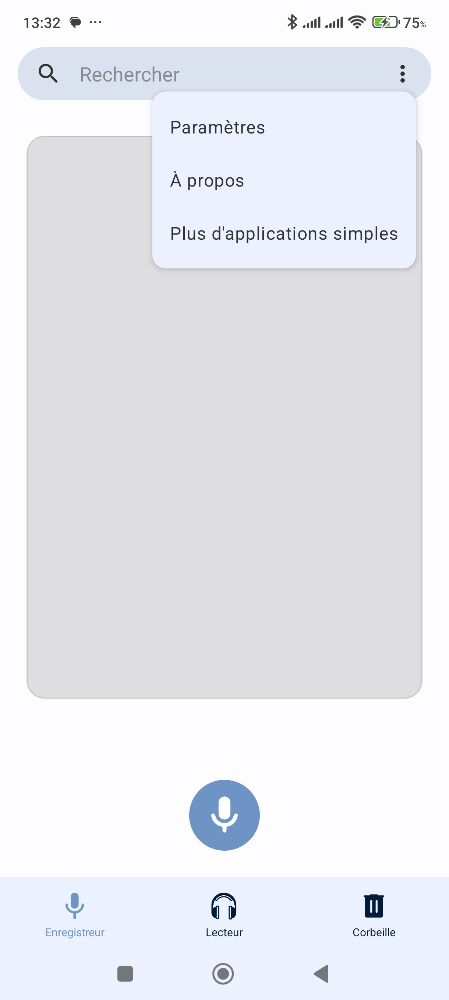
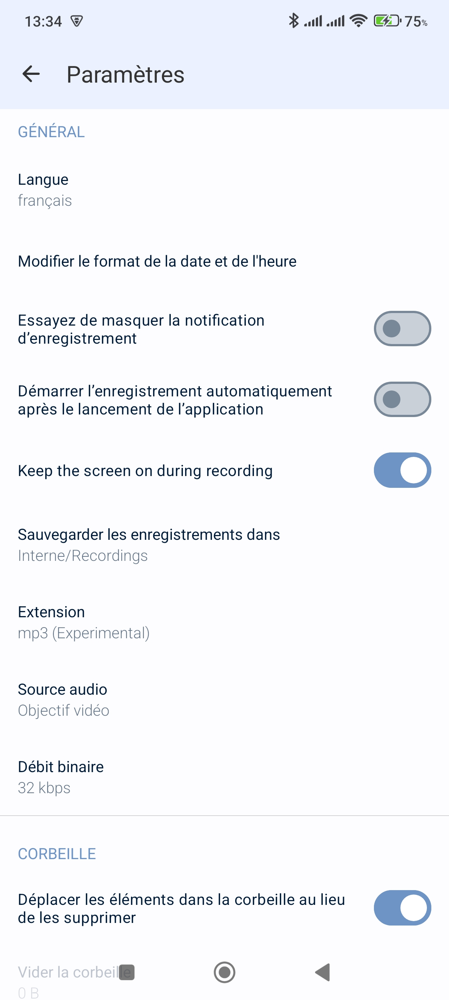
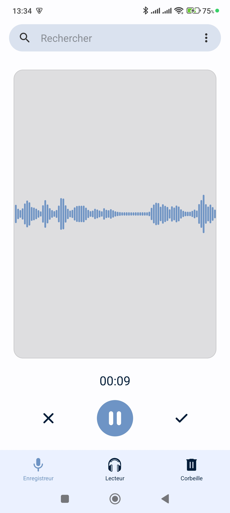
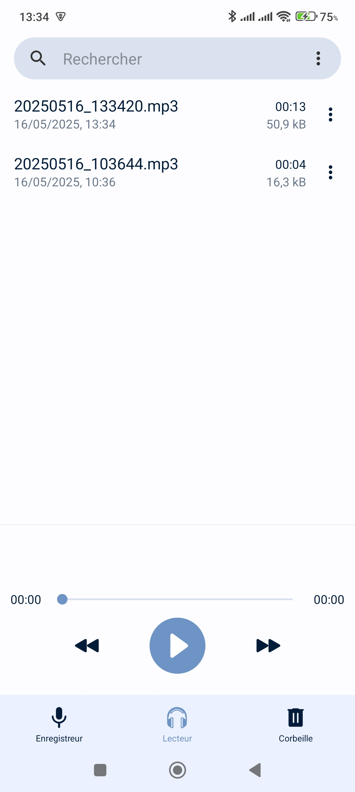
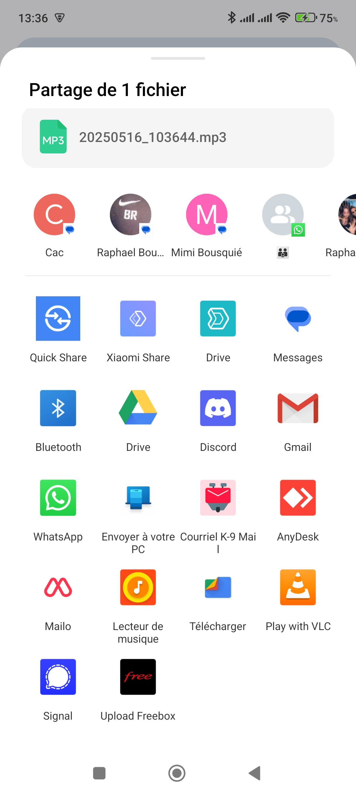

Principe
Pour l'instant, l'application Albertine n'existe que pour PC et n'est pas une application mobile.Néanmoins, il est possible d'enregistrer une réunion depuis son smartphone et de la transmettre ensuite à Albertine sur PC.
La marche à suivre est la suivante :
Lors de la réunion à transcrire, vous utilisez simplement une application Magnétophone de votre smartphone et vous enregistrez l'audio au format mp3 ou wav, à paramétrer avant le début de l'enregistrement en général (note : si cela est paramétrable, vous pouvez descendre le taux d'échantillonnage jusqu'à 16 kbps qui est la valeur à laquelle travaille l'IA, ce qui vous produira des fichiers plus légers).
Une fois l'enregistrement terminé, vous devez transférer le fichier audio sur votre PC.
Pour cela, vous pouvez utiliser un câble USB pour le transfert direct ou bien utiliser un service de stockage en ligne (Google Drive, Dropbox, etc.) , ou encore le mail si le fichier n'est pas trop volumineux, pour le transfert sans fil dès que vous avez du réseau.
Une fois le fichier audio sur votre PC, vous pouvez l'importer dans Albertine et lancer la transcription.
Préconisations
Application Fossify Voice Recorder
Installez l'application de Magnétophone open source, gratuite et sans publicité, Fossify Voice Recorder depuis le PlayStore Android :
https://play.google.com/store/apps/details?id=org.fossify.voicerecorder
Paramétrage de l'application
La première fois que vous allez utiliser cette application, elle va vous demander de lui autoriser des droits d'accès (à un répertoire de sauvegarde pour le fichier audio, à l'usage du micro, etc) : acceptez initialement toutes ces demandes, ça ne vous sera plus demandé.
1. Ouvrez le menu de l'application en cliquant sur les trois petits traits en haut à gauche de l'écran et choisissez "Paramètres" dans le menu déroulant.

2. Dans l'écran des paramètres :
a. Choisissez le répertoire de sauvegarde de l'enregistrement audio si celui choisi par défaut ne vous convient pas dans "Sauvegarder les enregistrements dans".
Dans l'exemple ci-dessous, le répertoire du téléphone choisi est Interne/Recordings
b. Sélectionnez mp3 comme format audio dans "Extension".
c. Réduisez le débit pour obtenir un fichier moins volumineux en choisissant "32 kbps" dans "Débit Binaire".

Ces réglages ne se font que la première fois, mais vous pouvez les modifier à tout moment si vous le souhaitez.
Enregistrement d'une réunion
Dans l'écran principal de l'application (onglet Enregistreur sur le bandeau du bas), pressez simplement le bouton central représentant un micro et l'enregistrement démarre.
Vous pouvez alors mettre l'enregistrement en pause à tout moment en appuyant sur le bouton central et le reprendre en appuyant à nouveau sur ce bouton.
Enfin, pour arrêter l'enregistrement, appuyez sur le bouton stop (la coche à droite du bouton central).
Si vous appuyez sur la croix à gauche du bouton central, vous annulez et supprimez directement l'enregistrement en cours.

Fichiers audio
Dans l'écran des fichiers (onglet Lecteur sur le bandeau du bas), vous voyez la liste de tous les fichiers audio enregistrés par l'application dans le répertoire choisi sur le téléphone.

Pour écouter un fichier, il suffit de cliquer dessus.
Pour le renommer, cliquez sur le nom du fichier et choisissez "Renommer" dans le menu déroulant.
Transfert vers Albertine
Pour transférer le fichier audio à Albertine sur votre PC, vous pouvez le faire de plusieurs manières :
a. En le transférant directement sur votre PC avec un câble USB.
c. En l'envoyant par mail si le fichier n'est pas trop volumineux.
c. En le partageant sur un service de stockage en ligne (Google Drive, Drive Entrainer, etc.) pour le récupérer ensuite sur votre PC :
cliquez sur les trois petits points à droite du nom du fichier et choisissez "Partager" dans le menu déroulant.
Vous pouvez alors choisir le moyen de partage que vous souhaitez utiliser (Google Drive, Drive Entrainer, mail, etc.)
La méthode recommandée est d'utiliser le Drive Entrainer de l'IUT à partir de l'application Synology Drive à installer sur votre smartphone (icône ).
